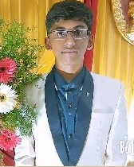

*This is S K Hari Kheshav.I am basically a learner, who tries to specialize in many fields.
*I have a special fascination on binary{1-0}because I feel the urge that it holds the key to the future though its an age old concept.
*I am specialised in the bottom- up process of digital electronics and
can deduce logical circuitry of any functions and simulate them using Simulink Software.
*I am a beginner in Python and web designing.
*I have intermediate knowledge in data structures and can handle C++ quite well.
*I can handle assembly based microprocessors and microcontrollers quite well.
*I am a keyboard player though I like music theory rather than playing the instrument.